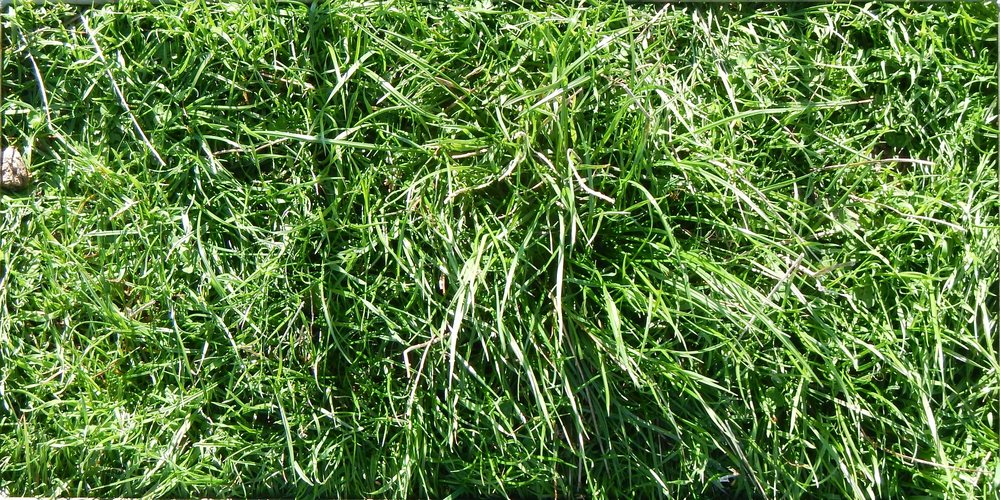
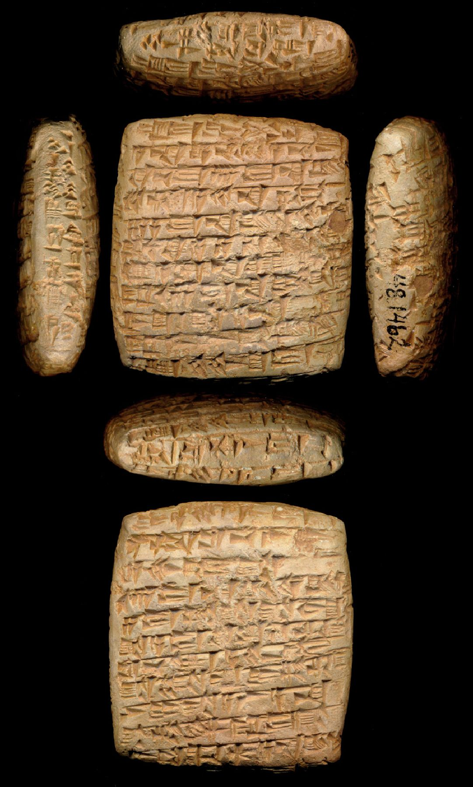
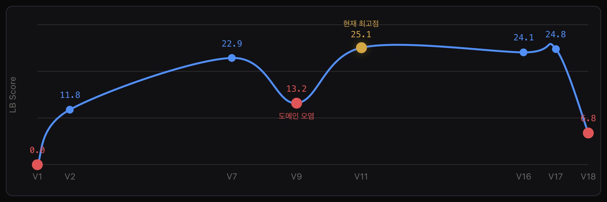
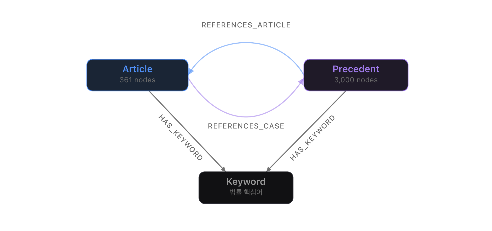

이력서에 담지 못한 기술적 깊이를 정리한 프로젝트별 상세 포트폴리오입니다. 각 프로젝트에서 무엇을 시도했고, 왜 실패했고, 어떤 결정이 성능을 바꿨는지를 기록합니다.
초지(grassland) 이미지에서 식물 Biomass 양을 예측하는 회귀(Regression) 문제. Silver Medal을 수상했습니다.
가장 먼저 확인한 건 test set에 State, Species, NDVI, Height가 없다는 점이었습니다. 멀티모달로 설계하더라도 결국 inference는 image-only여야 했고, 이 제약이 이후 모든 설계 결정의 기준이 됐습니다.
추가로 Dry_Clover_g의 37.8%가 0 — zero-inflated target이라 단순 MSE 학습만으로는 clover 예측이 무너질 수 있었습니다.
초기엔 EfficientNet-B0/B4로 baseline을 잡고, 이후 DINOv2, 최종적으로 DINOv3 ViT-Large를 주력 backbone으로 정착시켰습니다.
긴 quadrat 이미지를 좌우로 반 분할해 DINOv3 ViT-Large에 각각 통과시키고, FiLM(Feature-wise Linear Modulation)으로 양쪽 context를 섞는 방식입니다. 이미지를 하나로 줄여 넣는 것보다 공간 구조를 보존할 수 있었고, self-supervised 표현력을 최대한 유지하면서 회귀 성능을 끌어올릴 수 있었습니다.

실제 경진대회 데이터 샘플. 가로로 긴 quadrat 이미지를 중앙에서 좌/우로 분할해 각각 ViT-Large에 입력합니다.
→ Full fine-tune + 작은 backbone LR이 최종 best. "완전 동결"은 도메인 특화 패턴을 못 잡고, "균일 LR"은 pretrained feature를 덮어썼습니다.
전처리 — 이미지를 가로 중앙에서 좌우 반 분할 → Resize(512→560) → Dual-view 입력 → ImageNet Normalize
증강 — RandomHorizontalFlip, RandomVerticalFlip, ColorJitter (hue=0.02로 축소 — 크게 두면 초록/갈색 식생 색상 붕괴)
TTA — Original + HFlip + VFlip (3x) / v24: TENT-style, augmentation 예측의 variance를 줄이는 방향으로 LayerNorm 업데이트
v17에서 Optuna로 hyperparameter를 최적화했더니 CV 점수는 크게 올랐지만, LB와 gap이 벌어졌습니다. 분석 결과 "모델이 부족한 게 아니라 validation 설계에 leakage가 있었다"는 결론에 도달했습니다.
Sampling_Date 그룹 기반 CV로 전환 — 같은 날 촬영된 이미지들이 train/val에 섞이지 않도록 fold를 재구성했습니다.
시도한 것들 — Physics constraints, Teacher-student distillation, Pseudo-labeling, Auxiliary task (NDVI/Height), Multi-backbone ensemble, Full-frame + SSF adapter, LLRD partial unfreeze, TENT inference adaptation
약 4,000년 전 점토판에 기록된 구 아시리아 방언(Old Assyrian) 아카드어 음역을 영어로 번역하는 Seq2Seq NMT 문제. 평가 지표는 Geometric Mean(BLEU-4, chrF++)입니다.
"um-ma X-ma a-na Y-ma" → "Thus says X, to Y:"
약 4,000년 전 구 아시리아 점토판. 이 텍스트의 음역을 영어로 번역하는 것이 문제의 목표입니다.
ByT5(Byte-level T5)를 선택한 가장 큰 이유는 byte-level 처리입니다. 아카드어 음역의 diacritic과 OCR artifact를 서브워드 vocab으로 처리하면 OOV가 폭발하지만, byte-level tokenizer는 어떤 문자도 1~3 byte로 안전하게 처리합니다.
!!!! 반복 출력. 체크포인트 경로, 토크나이저 메타 불일치도 겹쳤습니다.chrF=1.0 × 5×가중치로 MBR 장악 → 독일어 출력. 수정 완료: TM을 C에서 제거, R에만 유지.
버전별 Leaderboard 스코어 추이 — V1(0.0) → V11(25.1). 주요 전환점마다 설계 결정이 성능을 바꿨습니다.
tie_word_embeddings=True에서 save_pretrained이 lm_head.weight를 safetensors에 저장하지 않음 → 수동 load_state_dict 로딩 시 lm_head 랜덤 초기화 → EOS 즉시 출력. 해결: AutoModelForSeq2SeqLM.from_pretrained(local_files_only=True) 강제.AR 방식의 한계("초반에 phrasing을 틀리면 끝까지 그대로")를 진단하고, MDLM(Masked Diffusion Language Model) 기반 ByT5 refinement를 탐색 중입니다. 파이프라인 구현이 상당히 진행됐으나, 성능 검증은 아직 진행 중입니다.
형법 조문과 판례를 연결하는 그래프 기반 하이브리드 RAG 시스템. 단순 벡터 유사도를 넘어 법조문 간 인용/참조 관계를 retrieval signal로 활용합니다.
법률 QA에서 순수 벡터 검색은 "의미적으로 비슷한 문서"를 가져올 뿐, 법적으로 연결된 문서를 가져오지 못합니다.
판례 92도2540(정당방위 관련 사례)이 top-1 — 간접적 참고 자료
제21조(정당방위) 조문이 직접 surface — 법적 정의의 출처
형법 조문 — 법제처 PDF → PyPDFLoader → 361개 조문(Article 노드). 초기 장(章) 단위(47개)에서 조문 단위(361개)로 전환했습니다.
판례 — AIHub 5,404개 중 3,000건 샘플링해 Precedent 노드 구성.
FAISS/Chroma 대신 Neo4j를 선택한 이유: 조문 간 인용 관계, 판례-조문 참조, 키워드를 엣지로 표현해야 했기 때문입니다.
Article (형법 조문) · Precedent (판례) · Keyword (법률 핵심어)REFERENCES_ARTICLE (판례→조문) · REFERENCES_CASE (조문→판례) · HAS_KEYWORD
Neo4j 그래프 스키마. Article·Precedent·Keyword 노드와 인용/참조 엣지로 법률 구조를 표현합니다.
HAS_KEYWORD 엣지를 통한 개념 기반 검색REFERENCES_ARTICLE 엣지 → 조문 역추적각 경로의 결과를 점수 기반으로 통합해 최종 context를 구성하고, gpt-4o-mini에 전달합니다.
개선 방향: Bayesian Optimization(가중치 자동 탐색), RAFT(법률 도메인 fine-tuning), NodeRAG(정교한 그래프 활용)
LangGraph · LangChain 기반 국내 주식 정보 분석 AI 에이전트. HyperCLOVA X 파인튜닝 모델로 한국 투자 커뮤니티의 모호한 언어를 구조화된 질의로 번역합니다.
이 프로젝트의 핵심은 "LLM이 답을 직접 계산한다"가 아닙니다. 한국 주식 커뮤니티의 은어와 모호한 표현을 정량 조건으로 번역하는 데 LLM을 쓰고, 실제 계산은 deterministic Python 로직이 담당합니다.
analyze_intent → 조건부 분기 → 분석 노드 → generate_response 흐름의 라우터형 state machine입니다.
AgentState는 parsing 슬롯(intent, ticker, rsi_threshold, band_type 등)과 실행 결과 슬롯(volume_top_stocks, market_index_value, final_answer 등)으로 이원화했습니다.
한국 주식 자연어를 실행 가능한 라우팅 파라미터로 변환하는 semantic parser입니다. Instruction-style 데이터셋(data.csv)으로 학습했습니다. 의도 분석은 LLM + 규칙 보정 하이브리드 — 날짜 보정, 골든/데드크로스 키워드, 회사 별칭(삼전, 하이닉스, 엔솔)까지 반영합니다.
모든 지표는 tools.py에서 Python으로 계산한 뒤 결과만 포매팅합니다. LLM이 숫자를 만들어낼 여지를 차단하는 의도적 설계입니다.
ta.rsi(length=16) via FinanceDataReaderThreadPoolExecutor 병렬화.KS/.KQ, ^KS11/^KQ11)On-demand snapshot 방식 — 질문 시점에 최신 가용 데이터를 조회합니다.
파인튜닝 데이터셋은 MACD, 스토캐스틱, ADX까지 포함하지만, 실행 로직은 일부 미구현. 또한 generate_response_node는 코드 기준으로 템플릿 포매팅입니다 — LLM이 숫자를 만들어낼 여지를 차단하는 의도적 설계이지만, 자연어 응답 생성으로 발전할 여지가 있습니다.